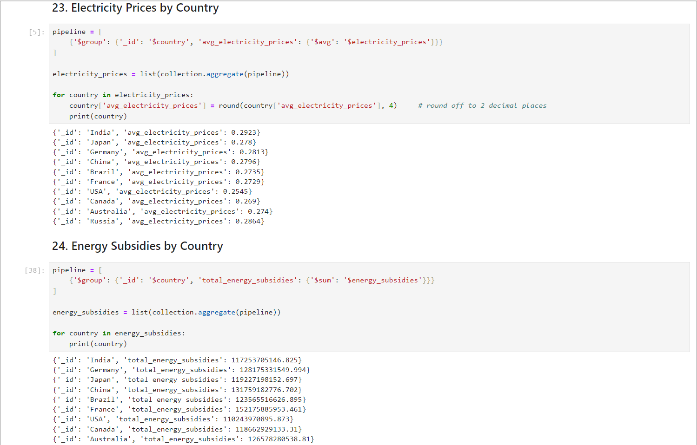

Project Background
The growing focus on renewable energy sources has prompted the need for
extensive data analysis to understand trends, investments, and impacts.
This project aims to analyze renewable energy data to uncover insights
and support decision-making.
Objectives:
To import renewable energy data into MongoDB.
To analyze the data using MongoDB queries.
To uncover trends, correlations, and patterns in renewable energy
production, investments, and other related metrics.
Scope:
Data Import: Import a comprehensive dataset of global renewable energy
metrics into MongoDB.
Data Analysis: Utilize MongoDB queries to analyze various aspects of the
dataset, including energy production, investments, capacity, and more.
Key Metrics: Analyze key metrics such as production in GWh, installed
capacity in MW, CO2 emissions, and renewable energy jobs.
Insights: Generate insights on trends, correlations, and patterns in
renewable energy data across different countries and years.
Decision Support: Provide valuable insights to support decision-making
in renewable energy projects and policies.
Methodology:
Data Loading: Import the renewable energy dataset into MongoDB.
Aggregation Queries: Use MongoDB's aggregation framework to perform
various analyses, such as grouping, filtering, and summarizing data.
Result Interpretation: Interpret the results of the queries to generate
actionable insights.
Key Features:
Analysis of energy production trends by country and year.
Examination of investments and their impact on renewable energy growth.
Evaluation of renewable energy's role in reducing CO2 emissions.
Assessment of the relationship between renewable energy jobs and energy
production.
Dataset
The dataset used for this analysis is a comprehensive collection of
renewable energy data, including information on production, investments,
capacity, and various other attributes.
The data for this project is sourced from Kaggle
(Ref. dataset).
The dataset contains the following columns:
| Sr. No |
Attribute |
Description |
| 1 |
country |
Name of the country |
Conclusion
Summarize the insights gained from the analysis. Discuss how these
insights can be used for decision-making in renewable energy projects.
Snapshots


